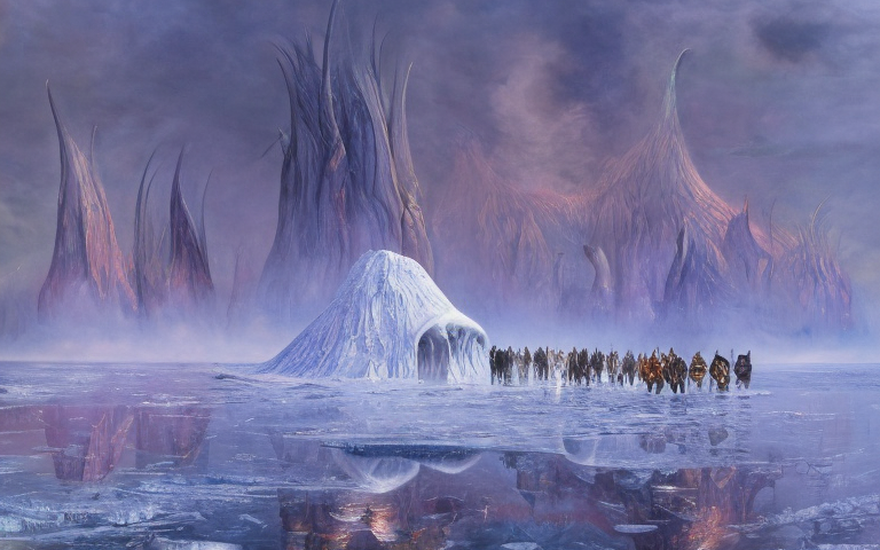
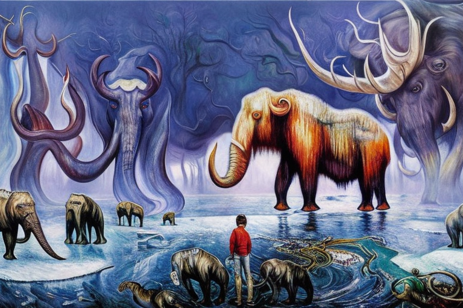

Η Καλίρα και η φυλή της στην Παγία
Αρχική Σελίδα
Πίνακας Περιεχομένων
Η τυραννία του Κάλτορ

Μια φορά κι έναν καιρό, στον μακρινό πλανήτη της Παγίας, ζούσε μια περήφανη και ευγενής φυλή πολεμιστών. Ο πλανήτης τους ήταν μια παγωμένη ερημιά, όπου οι ανάσες στερεοποιούταν στους πνεύμονές και οι παγοθύελλες που μαίνονταν σε όλη την επιφάνεια του εδάφους, διατρυπούσαν κάθε εμπόδιο στο δρόμο τους. Παρά τις σκληρές συνθήκες, η φυλή είχε ευδοκιμήσει για γενιές, χρησιμοποιώντας τη δύναμή και την πονηριά τους για να επιβιώσουν σε αυτή τη αφιλόξενη γη.
Της φυλής ηγούταν ένας άγριος και χαρισματικός αρχηγός, γνωστός ως Κάλτωρ ο γενναίος. Ήταν ένας πολεμιστής με καρδιά από πάγο και ψυχή απο φωτιά. Υπό την ηγεσία του, η φυλή είχε γίνει δυνατή και ευημερούσα, και οι άνθρωποι του απέδιδαν ευλάβεια και σεβασμό.
Ωστόσο κάτι άλλαζε στο παγωμένο βασίλειο της φυλής. Για πολλά φεγγάρια, οι παγοθύελλες είχαν γίνει ισχυρότερες και τα πλάσματα που περιφέρονταν στις ερημιές αγριότερα. Οι κυνηγοί της φυλής ανέφεραν περίεργες και ανησυχητικές μορφές, όπως φαντάσματα που πετούσαν πάνω στον πάγο, προκαλώντας τους ένα ρίγος που διατρυπούσε τα ίδια τους τα κόκκαλα.
Ένα βράδυ, ένας μυστηριώδης ξένος έφτασε στο χωριό της φυλής. Ήταν ψηλός και αδύναμος, με δέρμα χλωμό σαν το χιόνι και μάτια μαύρα σαν κάρβουνο. Γνωστός ως Βάλτωρ, ήταν ένας ισχυρός μάγος, και προσέφερε στη φυλή ένα δώρο. Είπε στον Κάλτωρ ότι μπορούσε να του χαρίσει τη δύναμη να ελέγχει τις παγοθύελλες, να τις παύει κατα βούληση, ώστε να προστατεύσει τους ανθρώπους του από τους κινδύνους πέρα των τείχων του χωριού.
Ο Κάλτωρ ήταν δύσπιστος, αλλά τα λόγια του ξένου του κέντρισαν το ενδιαφέρον. Συμφώνησε να τον ακούσει και ο Βάλτωρ τον οδήγησε σε μια σπηλια κρυμμένη βαθιά μέσα στον πάγο. Εκεί, απεκάλυψε τον μαγικό κρύσταλλο, που περιέχει τη δύναμη των καταιγίδων πάγου. Το μόνο που έπρεπε να κάνει ο Κάλτωρ ήταν να απλώσει το χέρι και να το πάρει.
Ο Κάλτωρ το έπραξε, αλλά μόλις έκλεισε το χέρι του περί του κρυστάλλου, ήξερε ότι υπέπεσε σε ένα τρομερό σφάλμα. Η δύναμη των παγοθύελλων τον εμπότισε, γεμίζοντάς τον με μια σκοτεινή και διεφθαρμένη ενέργεια. Οι κυνηγοί της φυλής είχαν δίκιο. Υπήρχαν δυνάμεις του κακού που δρούσαν στην Παγία και ο Κάλτωρ είχε πέσει θύμα τους.
Με τη νέα του δύναμη, ο Κάλτωρ άρχισε να τυραννά τη φυλή, χρησιμοποιώντας τις παγοθύελλες για να τρομοκρατήσει τους ανθρώπους και να υπακούσουν σε κάθε θέλησή του. Η κάποτε περήφανη φυλή έγινε σκιά του πρώην εαυτού της και οι άνθρωποι ζούσαν με τον φόβο του σκληρού ηγέτη τους.
Ωστόσο, υπήρχε ακόμα ελπίδα. Μια νεαρή πολεμίστρια ονόματι Καλίρα, που μεγάλωσε υπό την κυριαρχία του Κάλτωρ, αρνήθηκε να τα παρατήσει. Συγκέντρωσε μια ομάδα επαναστατών, αποφασισμένη να ανατρέψει τον τύραννο και να επαναφέρει τη φυλή στην παλιά της δόξα. Ενώθηκαν, παρά τις καταιγίδες του πάγου και κινδύνους της ερημιάς, στην προσπάθειά τους να νικήσουν τον Κάλτωρ και να ανακτήσουν τη δύναμη του πάγου.
Μετά μιας μακράς σύγκρουσης η Καλίρα και οι επαναστάτες της θριάμβευσαν. Νίκησαν τον Κάλτωρ και έδιωξαν την κακή μαγεία που τον είχε κυριεύσει. Με τη φυλή για άλλη μια φορά ελεύθερη και τη δύναμη των παγοθύελλων να έχει αποκατασταθεί στη σωστή θέση της, η Παγία ήταν για άλλη μια φορά σε ειρήνη.
Η αναζήτηση της θερμότητας

Οι επαναστάτες προσπάθησαν να ανάψουν μερικές φλόγες για να γιορτάσουν τον θρίαμβο, σύντομα όμως ανακάλυψαν ότι το σύμπαν ήταν παγωμένο πέραν απο κάθε φαντασία. Το σύμπαν είχε διασταλλεί σε τέτοιο βαθμό που η θερμότητα από τα αστέρια δεν ήταν πλέον αρκετή για να ζεστάνει τις παγωμένες ερημιές της Παγίας. Όσο κι αν προσπάθησαν η Καλίρα και οι επαναστάτες της, οι σπίθες από τους αναπτήρες δεν ήταν αρκετές για να ανάψουν τα ξερά φύλλα και κλαδιά που είχαν μαζέψει.
Αγωνίζοταν, μέρα με τη μέρα, δοκιμάζοντας κάθε πιθανή τεχνική, αλλά μάταια. Η θερμοκρασία έπεφτε ολοένα και παρακάτω και οι άνεμοι γίνονταν όλο και εντονότεροι. Η κάποτε ακμάζουσα φυλή βρισκόταν τώρα στο χείλος της εξαφάνισης και οι άνθρωποι άρχισαν να απελπίζονται.
Όμως η Καλίρα αρνήθηκε να τα παρατήσει. Ήταν μια αληθινή πολεμίστρια, με καρδιά από φωτιά και σιδερένια θέληση. Ήξερε ότι η μοίρα της φυλής κρέμοταν απ`την ίδια. Και έτσι, οδήγησε τους επαναστάτες της σε μια αναζήτηση να βρουν μία πηγή της θερμότητας που τόσο τους ήταν απαραίτητη.
Για πολλά φεγγάρια, ταξίδεψαν στις παγωμένες ερημιές, άντεξαν στις πιο σκληρές συνθήκες και αντιμετώπισαν τα πιο τρομακτικά θηρία. Συνάντησαν περίεργα και μυστηριώδη πλάσματα, αντίκρυσαν θαύματα πέρα από την αντίληψή τους και πάλεψαν ενάντια στο χρόνο. Και διαμέσου όλων αυτών, η Καλίρα δεν αμφιταλαντεύτηκε ποτέ.
Μετά απο χρονικό διάστημα όσο μια αιωνιότητα, συνάντησαν ένα κρυμμένο σπήλαιο, βαθιά μέσα στον πάγο. Και εκεί, στην καρδιά του σπηλαίου, έφεγγε μια μικρή φλόγα, που τρεμόπαιζε αδύναμα στο σκοτάδι. Έφεραν τη φλόγα πίσω στο χωριό της φυλής, και καθώς πλησίαζαν, οι άνθρωποι θαύμασαν το θέαμα. Για πρώτη φορά ένιωθαν πως υπήρχε φως και ζεστασιά στον κόσμο τους. Μαζεύτηκαν γύρω από τη φλόγα, στριμώχνονταν για να απολαύσουν τη λάμψη της και ένιωσαν το πνεύμα τους να αναπτερώνεται.
Η αποδοχή του δώρου

Καθώς η φυλή γιόρταζε τη ζεστασιά της φλόγας που ανακάλυψε, ένα περίεργο συναίσθημα πλημμύρισε την Καλίρα. Ήταν σαν ο ίδιος ο αέρας γύρω της να αστράφτει και να πάλλεται από μια απόκοσμη ενέργεια. Και τότε, όσο ξαφνικά είχε εμφανιστεί, η ενέργεια συνενώθηκε σε μια μορφή και μια φωνή της μίλησε.
“Μπράβο, γενναία πολεμίστρια”, είπε η φωνή. “Απέδειξες την αξία σου“.
Η Καλίρα και οι επαναστάτες της έμειναν άναυδοι, γιατί μπροστά τους στεκόταν ένα ον που δεν έμοιαζε με κανένα άλλο. Ήταν ψηλός και μεγαλοπρεπής, με το σώμα του φτιαγμένο από την ίδια αστραφτερή ενέργεια όπως ο αέρας γύρω του. Ήταν ο θεός της σταθερής θερμοκρασίας και είχε έρθει να τους προσφέρει ένα δώρο.
“Το σύμπαν διαστέλλεται”, είπε ο θεός, “και θα συνεχίσει, μέχρι να μη μείνει τίποτα άλλο εκτός από σκοτάδι και κρύο. Αλλά σας προσφέρω μια επιλογή. Ένα σύμπαν που δεν διαστέλλεται, ένα σύμπαν που είναι κρύο, αλλά όχι παγωμένο. Ένα σύμπαν όπου η φυλή σου μπορεί να επιβιώσει και να ευημερήσει”.
Η Καλίρα και οι επαναστάτες της κυριευθηκαν απο απορία και έκπληξη, γιατί δεν είχαν φανταστεί ποτέ ότι κάτι τέτοιο ήταν δυνατό. Κοιτάχτηκαν, χωρίς να ξέρουν τι να κάνουν, αλλά μετά η Καλίρα προχώρησε, με τα μάτια της να αντανακλούν αποφασιστικότητα.
“Δεχόμαστε το δώρο σου”, με φωνή της ηχούσε δυνατά και καθαρά. “Θα κάνουμε ό,τι χρειάζεται για να προστατεύσουμε τη φυλή μας και να διασφαλίσουμε ότι θα επιβιώσει”.
Και έτσι, ο θεός της σταθερής θερμοκρασίας χαμογέλασε και άπλωσε το χέρι του. Με ένα άγγιγμα, το σύμπαν άλλαξε και η φυλή μεταφέρθηκε σε ένα νέο βασίλειο, όπου η θερμοκρασία ήταν σταθερή και οι παγοθύελλες δεν μαίνονταν πια. Ήταν γεμάτοι δέος και ευγνωμοσύνη, γιατί ήξεραν ότι τους είχε δοθεί μια δεύτερη ευκαιρία, μια ευκαιρία να ζήσουν σε έναν κόσμο ψυχρό, αλλά όχι θανατηφόρο.
Η ανθοφορία της ζωής

Μετά την σταθεροποίηση της θερμοκρασίας, η Παγία μετετράπη από μια σκληρή, αδυσώπητη ερημιά σε ένα πολύ πιο φιλόξενο μέρος. Οι άνεμοι δεν μαίνονταν πλέον σε όλη την επιφάνεια, παρασύροντας κὰθε εμπόδιο, και οι παγοθύελλες δεν απειλούσαν πλέον να παγώσουν ένα άτομο στέρεο με μια μόνο ανάσα. Αντίθετα, η θερμοκρασία ήταν ήπια και ο αέρας καθαρός και διάφανος.
Καθώς περνούσαν τα χρόνια, η φυλή ήκμασε, και νέα ζωή άρχισε να ριζώνει στην Παγία. Μεγάλα κοπάδια μαμούθιων τριγυρνούσαν στον πάγο και το χώμα, και τα παιδιά της φυλής έπαιζαν συχνά ανάμεσά τους, σκαρφαλώνοντας στις ογκώδεις πλάτες τους και γελώντας από χαρά. Για πρώτη φορά, μπόρεσαν να πατήσουν άφοβα στο χώμα, νιώθοντας την απαλή γη κάτω από τα πόδια τους, και χαίρονταν με την αίσθηση αυτή.
Μια μέρα, μια νεαρή κοπέλα ονόματι Ταλίρα ανακάλυψε κάτι απίστευτο. Πλησίασε κοντά σε ένα κοπάδι μαμούθιων παίζοντας με τα μεγάλα θηρία και μόλις έσκαψε λίγο το χώμα, έπεσε πάνω σε ένα κομμάτι πράσινο. Ήταν κάτι πρωτόγνωρο στους πάντες της φυλής, και ήταν γεμάτοι απορία και έκπληξη.
Η φυλή μαζεύτηκε γύρω από το πράσινο κομμάτι, θαυμάζοντας τα μικροσκοπικά βλαστάρια που είχαν ριζώσει στο χώμα. Και καθώς κοιτάχτηκαν, κατάλαβαν ότι αυτό ήταν μόνο η αρχή. Με τη σταθερή θερμοκρασία, η ζωή στην Παγία είχε αρχίσει ώστε να ευημερήσουν για πρώτη φορά.
Και έτσι, η φυλή συνέχισε να ακμάζει, ο αριθμός τους να αυξάνει και ο πολιτισμός τους να ανθίζει. Έφτιαξαν μεγάλες πόλεις από πάγο και πέτρα και έκαναν εμπόριο με άλλες φυλές από όλο τον πλανήτη. Απέκτησαν έναν πλούτο άγνωστο ως τότε, και ήταν γεμάτοι ευγνωμοσύνη για το δώρο που τους είχε δοθεί.
Οι εντολές του θεού

Ωστόσο, καθώς περνούσαν τα χρόνια, η φυλή άρχισε να παρατηρεί μικρές αλλαγές στην αγαπημένη τους Παγία. Επειδή η σταθερή θερμοκρασία που κάποτε ήταν τόσο ήπια άρχισε να διακυμαίνεται, απευθύνθηκαν στον θεό της σταθερής θερμοκρασίας, αναζητώντας απαντήσεις, και τους έδωσε οκτώ εντολές.
Η πρώτη εντολή ήταν “Κάψτε τα ορυκτά καύσιμα”. Ο θεός της σταθερής θερμοκρασίας τους διέταξε να σκάψουν βαθιά στη γη, να βρουν τα αρχαία καύσιμα που ήταν θαμμένα εκεί για αιώνες και να τα κάψουν σε μεγάλους φούρνους, χρησιμοποιώντας τη παγιδευμένη θερμότητα.
Η δεύτερη εντολή ήταν “Απελευθερώστε τον άνθρακα στην ατμόσφαιρα”. Ο θεός τους είπε να απελευθερώσουν τον άνθρακα που είχε παγιδευτεί στα ορυκτά καύσιμα, να τον στείλουν στα ύψη στον ουρανό, να ζεστάνουν τον πλανήτη και να τον εμποδίσουν να κρυώσει ξανά.
Η τρίτη εντολή ήταν “Συλλεξτε την ηλιακή φωτεινότητα“. Ο θεός τους διέταξε να αξιοποιήσουν τη δύναμη του ήλιου, να συλλέγουν το φως και τη θερμότητά του και να το χρησιμοποιούν για να ζεσταίνουν τις πόλεις και τα σπίτια τους.
Η τέταρτη εντολή ήταν “Κατασκευάστε ανεμογεννήτριες”. Ο θεός τους είπε να κατασκευάσουν υπέροχες μηχανές που κινούταν με τους ανέμους που έπνεαν σε όλη τη Παγία, να χρησιμοποιήσουν τη δύναμη του ανέμου για να περιστρέψουν πτερά και να παράγουν ηλεκτρική ενέργεια.
Η πέμπτη εντολή ήταν “Κατασκευάστε υδροφράγματα”. Ο θεός τους διέταξε να εκμεταλλευτούν τη δύναμη των μεγάλων ποταμών που κυλούσαν στη Παγία, να χτίσουν φράγματα και να χρησιμοποιήσουν την ενέργεια του νερού για την παραγωγή ηλεκτρισμού.
Η έκτη εντολή ήταν “Φυτέψτε δάση”. Ο θεός τους είπε να φυτέψουν δάση, να δημιουργήσουν χώρους πρασίνου που θα απορροφούσαν τον άνθρακα της ατμόσφαιρας και θα βοηθούσαν στη ρύθμιση της θερμοκρασίας του πλανήτη.
Η έβδομη εντολή ήταν “Αναπτύξτε γεωθερμική ενέργεια”. Ο θεός τους διέταξε να τρυπήσουν βαθιά στη γη, να εκμεταλλευτούν τη θερμότητα που βρισκόταν κρυμμένη κάτω από την επιφάνεια και να τη χρησιμοποιήσουν για να παράγουν ηλεκτρισμό και να ζεστάνουν τα σπίτια τους.
Η όγδοη εντολή ήταν “Υιοθετήστε βιώσιμες πρακτικές”. Ο θεός τους είπε να προσέχουν τον αντίκτυπό τους στον πλανήτη, να μειώσουν τα απόβλητά τους και να διατηρήσουν τους πόρους τους, έτσι ώστε η Παγία να παραμείνει ένα ζεστό και φιλόξενο μέρος για τις επόμενες γενιές.
Η Καλίρα και η φυλή πήραν αυτές τις εντολές στα σοβαρά και εργάστηκαν ακούραστα για να τις εφαρμόσουν. Έσκαψαν βαθιά στη γη και έκαιγαν τα ορυκτά καύσιμα σε μεγάλους φούρνους. Απελευθέρωσαν τον άνθρακα στην ατμόσφαιρα και αξιοποίησαν τη δύναμη του ήλιου και του ανέμου. Έφτιαξαν φράγματα και δάση και υιοθέτησαν βιώσιμες πρακτικές.
Και καθώς δούλευαν, παρακολουθούσαν καθώς η θερμοκρασία του Παγία ανέβαινε, καθώς ο αέρας ζεσταινόταν και οι άνεμοι ησυχάζουν. Είδαν τα φυτά και τα ζώα να αρχίζουν να ανθίζουν και ένιωσαν μια αίσθηση υπερηφάνειας για όσα είχαν καταφέρει. Διότι είχαν βοηθήσει να ζεσταθεί ένας κόσμος που κάποτε ήταν κρύος και αφιλόξενος, και του είχαν δώσει ζωή. Και ήξεραν ότι οι απόγονοί τους θα συνέχιζαν αυτή την κληρονομιά, ενθυμούμενοι πάντα τις οκτώ εντολές που τους είχε δώσει ο θεός της σταθερής θερμοκρασίας.